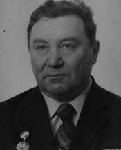
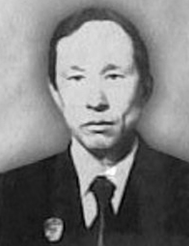
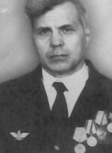
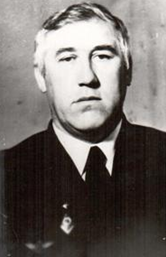
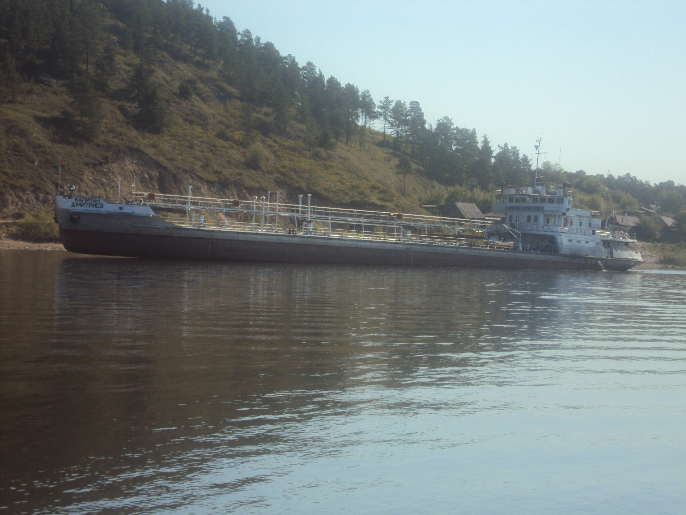
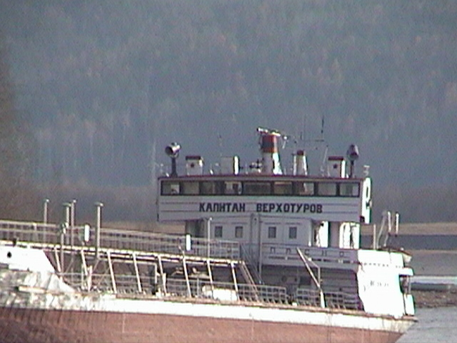
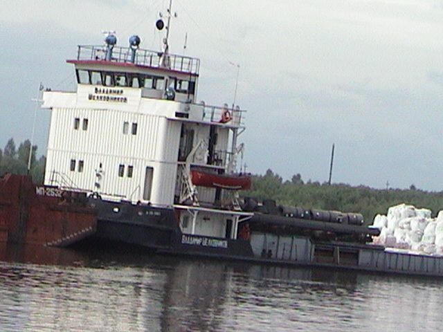
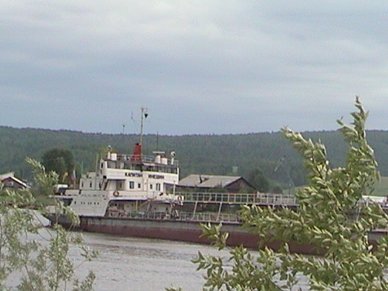

The Kirensk district has shaped more celebrated river captains than perhaps any other place on the Lena. From its vocational school and shipyards came navigators, mechanics and commanders who spent entire careers on the water — people whose knowledge of the river was passed down through decades of shared work. The ships that sail the Lena today carry their names on the hull: a quiet, enduring form of memory.
About
A river remembers those who served it — in the only way that matters: by carrying their names.
The Lena
Four thousand kilometres of silence, ice and current — the spine of eastern Siberia.
The Lena rises in the mountains west of Lake Baikal and empties into the Arctic Ocean, draining a basin the size of Western Europe. For centuries it was the only road through the taiga — a highway of spring floods and autumn freezes, of rafts and steamships and diesel convoys pushing upstream against the current. Towns like Kirensk existed because of the river and for it. The fleet was not a service; it was the circulatory system of an entire region.
Name archive
Biographies confirmed by archival documents and open sources.
1919
Nikolai Sergeyevich Veklyuch

N. S. VeklyuchBorn in Kirensk on 3 December 1919. He studied at the Kirensk Vocational School in the ship-mechanics group, completed a placement on the steamship Vtoraya Pyatiletka, and then spent decades taking part in the repair and construction of the Lena Shipping Company's fleet.
As early as the 1936 navigation season he trained under the renowned mechanic I. A. Pichkulyov, and in 1938 after graduating he received his first-assistant mechanic's diploma and was assigned to the steamship Bodaybinets. His career developed not only as a specialist but as an organiser: in 1939 he became senior foreman of the machine shop.
After the war and demobilisation Veklyuch returned to the Krasnoarmeysky Ship-Repair Plant. When from 1950 onward the Lena Shipping Company began intensive fleet expansion, he spent approximately thirty years participating in the construction of vessels of various types, leading teams that consistently met their production targets.
- Took part in the liberation of Southern Sakhalin in 1945
- For about 30 years worked as foreman and head of the machine shop
- Awarded the Orders of the Red Banner of Labour and the October Revolution
1946
Vladimir Viktorovich Verkhoturov

V. V. VerkhoturovAfter vocational school No. 3 he joined the steamship Khabarovsk, combined work with correspondence studies and in 1977 took command of the crew. A captain for whom not only the plan and safety mattered, but also the school of mentorship.
Verkhoturov's biography particularly highlights his role as a mentor. Students from the Nikolayev Shipbuilding Institute regularly did placements on the vessel, and much of the work of integrating newcomers into the crew fell to the captain. For him an accident-free navigation season was bound up not only with professional knowledge of the Lena, but also with the ability to build a strong team.
The Khabarovsk's crew took part in competitions in service culture, navigation safety and sports events. Behind this stood the captain's management style, which combined exacting standards with respect for people.
- Crew fulfilled the navigation plan at 115–120%
- Students completed placements on board
- In 1995 awarded the title Honoured Transport Worker of the Russian Federation
1938
Alexei Alexandrovich Ineshin

A. A. IneshinBorn 10 November 1938 in the village of Nepa in the Katanga District. After vocational school No. 3 he began work as a helmsman, in 1961 became second navigator on the steamship Polina Osipenko, and in 1968 was appointed captain of the steamship Kuban.
From 1983 Ineshin served as captain on the motor vessel Neman. He and his crew wrote bright pages in the annals of the Kirensk River Equipment Base, including the delivery of general cargo along the Kirenga River for construction of the Baikal-Amur Mainline railway.
Throughout his career he was known as a disciplined captain who knew his trade. He was repeatedly commended and entered on the district roll of honour and Book of Honour.
- From 1983 served as captain on the motor vessel Neman
- Entered on the district roll of honour and Book of Honour
- Holder of the Order of the Red Banner of Labour
1937
Vladimir Vasilyevich Dmitriev

V. V. DmitrievBorn 24 April 1937. He began as a helmsman on the steamship S. M. Kirov, in 1964 became captain of the dry-cargo motor vessel SP-654, and later worked on the tanker TO-1507 and the tugboat Selenga. His biography is closely bound up with the Upper Lena and the difficult navigation of convoys.
The records about Dmitriev describe with particular vividness his first voyages through the Lenskie Shchyoki — a challenging stretch of river where a navigator's error could prove fatal to the vessel.
After many years on the bridge he did not leave the profession at once: from 1989 he continued working as a mate on the tanker TO-1525, passing his experience on to young river workers.
- Served 24 years as captain
- Total fleet service of 43 years
- Awarded the Order of the Red Banner of Labour and the badge Excellent River Fleet Worker
1931
Vladimir Ivanovich Shelkovnikov
V. I. Shelkovnikov
He began his path in the vocational education system in 1931 and then for many years became the central figure of the Kirensk college. Under his leadership the institution became a training ground for the Lena River Shipping Company.
His own biography begins with learning carpentry at the Kirensk Vocational School. This was followed by work at the Krasnoarmeysky plant, a return to the college as an instructor of practical training, the post of head of the academic-production department, and then years of leading the institution.
For many graduates Shelkovnikov remained not merely a director but the man who gave them their start in the profession. Graduates called him 'Our Teacher'.
- Led the college from 1948
- Remembered by many graduates as 'Our Teacher'
- His name lives on within the Yakutsk shipping company
History of the place
The story begins not with a single ship but with an entire school of river craft.
The jubilee section of the Kirensk Vocational-Pedagogical College states that in 1922 an educational machine shop was established at the Krasnoarmeysky backwater for training river fleet specialists. It subsequently evolved from a vocational school to a trade school, then to a vocational-technical school, and eventually became part of the modern educational history of Kirensk.
Memory of the fleet
In Kirensk this history is preserved not only in documents.
The city portal of Kirensk, in its article about the library-museum of the Melnichniy district, states that the river workers' museum was opened on River Workers' Day, 4 July 1977. It is built around photographs, veterans' recollections, the history of the Kirensk River Equipment Base and materials about the captains, mechanics and shipbuilders of the Lena.
Open sources
Published materials mention other names connected with the river history of Kirensk.
What is confirmed precisely
The college's open documents provide individual texts on Veklyuch, Verkhoturov, Ineshin, Dmitriev and Shelkovnikov. That is why this site focuses on these five figures, without guesswork or artificial additions.
What the city archive provides
The publication about the library-museum shows that Kirensk has for decades been preserving photo albums, steamship models, river workers' memoirs and materials on the development of shipping on the Lena. The subject lives not only in documents but in the city's memory.
Photographs
Real ships on the Lena River




Sources
Official documents and pages that this site relies on
College jubilee section
Article about the river workers' library-museum in the Melnichniy district
City project mentioning the open-air museum of Lena River Fleet history
Document on N. S. Veklyuch
Document on V. V. Verkhoturov
Document on A. A. Ineshin
Document on V. V. Dmitriev
Document on V. I. Shelkovnikov